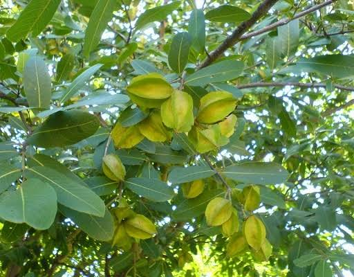

Basonym of Drug
Kakubha/Arjuna
Main Synonym
- Indradru
- Kakubha
- Dhavala
- Parth
- Dhananjaya
- Nadisarja
- Viravriksha
Regional Name
- Bengali: Arjuna
- Gujarati: Sadado
- Hindi: Arjuna
- Kannada: Maddi
- Tamil: Belma, Marudam Patti
- Telugu: Tella Maddi
- English: Arjun tree
Botanical Name
Terminalia arjuna
Family
Combretaceae
Classification (Gana)
- Aacharya Charaka: Udarda Prashamana, Kashaya Skandha
- Acharya Sushruta: Nyagrodhadi, Salsaradi Gana
- Acharya Vagbhatta: Asanadi, Nyagrodhadi, Viratarvadi Gana
External Morphology
20-30 meter high tree
Useful Parts
Bark, Fruit
Important Phytoconstituent
Arjunic acid, Arjunolic acids, Betulinic, and Ellagic acid, Tannin, Arachidic Stearate
Rasa Panchak
- Rasa: Kashya
- Guna: Laghu, Ruksha
- Virya: Shita
- Vipaka: Katu
Action
Kaphapittahara
Therapeutic Indication
- Udardaprashamana (useful in urticaria)
- Vranya (wound healing)
- Bhagnasandhanaka (useful in fracture healing)
- Trishnahara (reduce excessive thirst)
- Hradrogahara (cardiotonic)
Therapeutic Uses
- Hridroga - decoction of bark powder with an equal part of water and cow milk is beneficial in cardiac diseases.
- Vrana - a decoction is beneficial for cleaning chronic and non-healing wounds.
- Kustha - Arjuna is useful in skin diseases as an internal decoction and external as a bathing water.
- Puyameha - Arjuna and Dhava decoction is useful to treat pyospermia.
Dose
Powder - 3-6 gm, Decoction - 50-100 ml
Formulations
- Arjunarista
- Parthadhyrista
- Arjuna Ghrita
- Arjuna Kshirapaka
Adverse Effect
Not Known